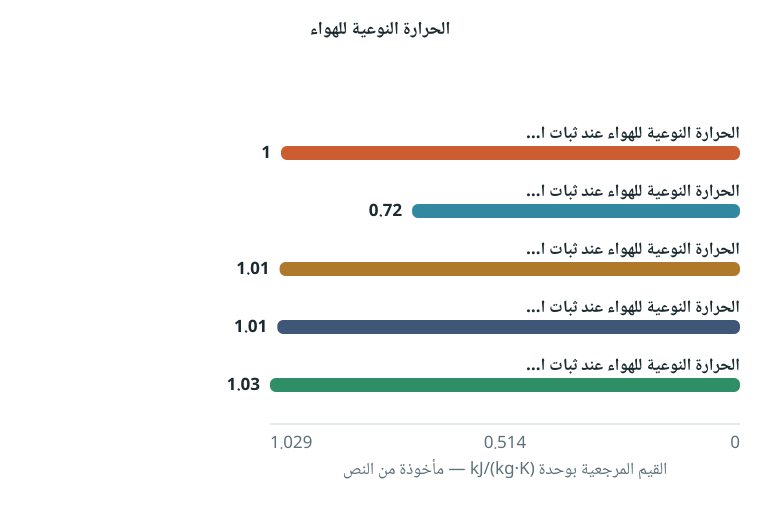

الحرارة النوعية للهواء
Specific Heat of Air
الحرارة اللازمة لرفع درجة حرارة كيلوغرام من الهواء درجة واحدة. تساوي 1.005 kJ/(kg·K) عند 300 K وتتغير مع الحرارة.
الحرارة النوعية للهواء عند ثبات الضغط c_p تساوي 1.005 kJ/(kg·K) عند 300 K، وهي القيمة التي يطبعها Çengel في الجدول A–2 لصف 300 K، مع c_v = 0.718 kJ/(kg·K) وk = c_p/c_v = 1.400. وتؤكدها Incropera بقيمة 1007 J/(kg·K) عند 300 K و1 atm، والفرق بين القيمتين 0.2% وهو تقريب لا تناقض. وتحذر Çengel من أن هذه القيمة تتغير مع درجة الحرارة: الصفوف التالية في الجدول تعطي 1.008 عند 350 K و1.013 عند 400 K و1.029 عند 500 K، فاستخدامها كثابت صالح لنطاق ضيق حول 300 K فقط. وتنص أن الهواء الجاف يمكن معاملته كغاز مثالي بحرارة نوعية ثابتة 1.005 kJ/(kg·K) في المدى −10 إلى 50 °م بخطأ مهمل.
كيف تعمل الظاهرة؟
الحرارة النوعية للهواء عند ثبات الضغط c_p هي الطاقة اللازمة لرفع درجة حرارة كيلوغرام واحد من الهواء درجة واحدة دون تغيير الضغط. وتُقاس عملياً بمسعر يتيح التمدد، وتُشتق نظرياً من درجات حرية الجزيئات: الهواء ثنائي الذرة له خمس درجات حرية فعّالة عند الحرارة العادية، فتُسهم الدوران والانتقال في استيعاب الطاقة.
العلاقة بالأرقام
c_p = 1.005 kJ/(kg·K) عند 300 K، وc_v = 0.718 kJ/(kg·K)، وk = c_p/c_v = 1.400. والقيمة البديلة 1007 J/(kg·K) عند 300 K و1 atm، والفرق بين القيمتين 0.2% وهو تقريب لا تناقض. وتتغير مع الحرارة: 1.008 عند 350 K و1.013 عند 400 K و1.029 عند 500 K. وتسخين 1 kg هواء من 300 إلى 350 K يحتاج نحو 50 kJ.
مفاهيم متقاربة
الحرارة النوعية للهواء تختلف عن الحرارة النوعية للماء: الماء يحتاج طاقة أكبر بكثير لرفع درجة حرارته، ولهذا يُستخدم الماء ناقلاً حرارياً. وتختلف عن c_v للهواء نفسه: c_p أكبر لأن التمدد عند ضغط ثابت يستهلك شغلاً إضافياً. ولا تُستخدم قيمة 1.005 عند درجات بعيدة عن 300 K، لأن الجدول نفسه يعطي 1.029 عند 500 K.
حدود التطبيق
القيمة صالحة لنطاق ضيق حول 300 K، ويُعامَل الهواء الجاف كغاز مثالي بحرارة نوعية ثابتة 1.005 kJ/(kg·K) في المدى −10 إلى 50 °م بخطأ مهمل فقط. ولا تصلح للهواء الرطب أو للغازات المحترقة أو عند الضغوط العالية حيث يبتعد الهواء عن سلوك الغاز المثالي. وقيمة Incropera 1007 J/(kg·K) منسوبة إلى جدول لم يُقرأ في هذه الجلسة.

| الكمية | القيمة | المصدر |
|---|---|---|
| الحرارة النوعية للهواء عند ثبات الضغط c_p عند 300 K (غاز مثالي) | 1.005 kJ/(kg·K) | [1] |
| الحرارة النوعية للهواء عند ثبات الضغط c_p عند 300 K و1 atm، بوحدة J/(kg·K) — منسوب إلى Incropera Table A.4 ولم يُقرأ في هذه الجلسة؛ القيمة غير متحقَّقة | 1007 J/(kg·K) | [2] |
| الحرارة النوعية للهواء عند ثبات الحجم c_v عند 300 K | 0.718 kJ/(kg·K) | [1] |
| نسبة الحرارة النوعية c_p/c_v (الأس الأدياباتي k) للهواء عند 300 K — لا بُعدية | 1.400 — | [1] |
| الحرارة النوعية للهواء عند ثبات الضغط c_p عند 350 K | 1.008 kJ/(kg·K) | [1] |
| الحرارة النوعية للهواء عند ثبات الضغط c_p عند 400 K | 1.013 kJ/(kg·K) | [1] |
| الحرارة النوعية للهواء عند ثبات الضغط c_p عند 500 K | 1.029 kJ/(kg·K) | [1] |
| نسبة الفرق بين قيمتي c_p للهواء عند 300 K: 1.005 kJ/(kg·K) مقابل 1007 J/(kg·K) | 0.2 % | [2] |
| مدى درجة الحرارة الذي يُعامَل فيه الهواء الجاف كغاز مثالي بحرارة نوعية ثابتة 1.005 kJ/(kg·K) بخطأ مهمل | −10 إلى 50 °م | [1] |
المصادر
- 1 Thermodynamics: An Engineering Approach, 8th ed. — McGraw-Hill (2015). openlibrary.org/api/books?bibkeys=ISBN:9780073398174&format=json&jscmd=data · اطُّلع عليه 2026-11-21
- 2 Fundamentals of Heat and Mass Transfer, 8th ed. — Wiley (2018). openlibrary.org/api/books?bibkeys=ISBN:9781119353881&format=json&jscmd=data · اطُّلع عليه 2026-11-21
استشهد بهذا المصطلح
الصيغتان مبنيتان من بيانات الصفحة نفسها: العنوان والتاريخ ورابط النسخة المنشورة.
الحرارة النوعية للهواء — Specific Heat of Air. (2026). ديوان المعرفة — انفراد. https://infiradev.com/diwan/terms/term-specific-heat-air.html
@misc{term-specific-heat-air2026,
title = {الحرارة النوعية للهواء},
titleaddon = {Specific Heat of Air},
howpublished = {{ديوان المعرفة — انفراد} — مرجع علمي عربي},
year = {2026},
url = {https://infiradev.com/diwan/terms/term-specific-heat-air.html},
urldate = {2026-11-26},
note = {مراجعة علمية: hermes (مراجعة معتمدة 2026-11-26)}
}
راجعه: hermes (مراجعة معتمدة 2026-11-26) · 2026-11-26 · آخر تحديث 2026-11-21